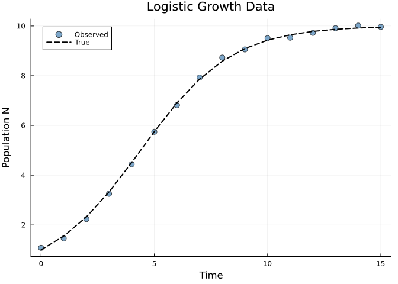
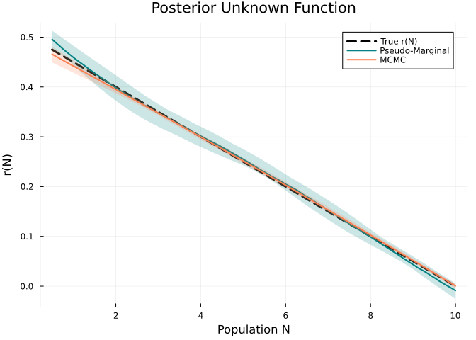
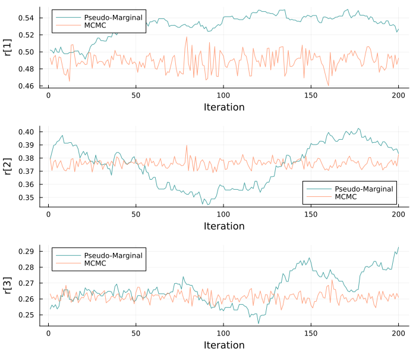
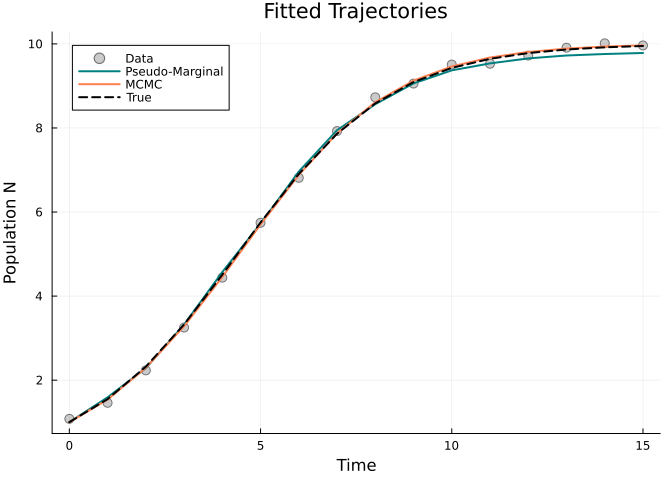
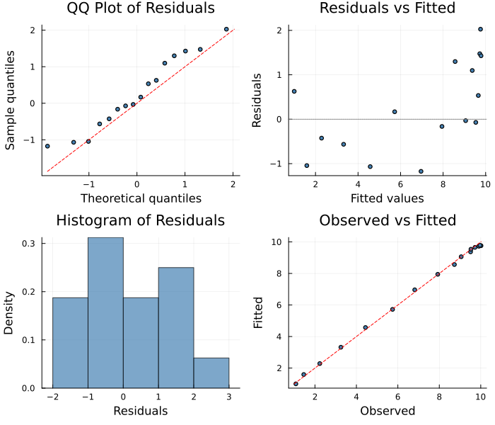

Bayesian Inference with PseudoMarginalSolver
Overview
The PseudoMarginalSolver combines probabilistic ODE solving with Bayesian MCMC inference. It forms an unbiased Monte-Carlo estimate of the marginal likelihood — drawing complete state trajectories from the probabilistic solver’s Gauss–Markov posterior by forward-filter/backward-sampling (FFBS) and averaging the data likelihood over them — and uses it inside a random-walk Metropolis sampler. Because the estimator is unbiased and nonnegative, the chain targets the exact posterior (Andrieu & Roberts 2009).
This differs from:
- MCMCSolver: Uses deterministic ODE integration for the likelihood
- MagiSolver: Uses Kalman-filtered Integrated Brownian Motion to marginalize states
- PseudoMarginalSolver: Uses an unbiased Monte-Carlo (FFBS) estimate of the marginal likelihood inside random-walk Metropolis
using PartiallySpecifiedModels
using OrdinaryDiffEq
using MCMCChains
using Statistics
using Plots; default(fmt=:png)
using Random
Random.seed!(42)TaskLocalRNG()Logistic Growth Model
r_true(N) = 0.5 * (1.0 - N / 10.0)
function logistic!(du, u, p, t)
N = u[1]
du[1] = p.r(N) * N
end
sol_true = solve(ODEProblem(logistic!, [1.0], (0.0, 15.0), (; r=r_true)),
Tsit5(); saveat=1.0)
t_data = collect(sol_true.t)
data_N = [sol_true.u[i][1] + 0.1 * randn() for i in 1:length(t_data)]
data_matrix = reshape(max.(data_N, 0.01), :, 1)16×1 Matrix{Float64}:
1.0788355601604291
1.4602953689302098
2.232315282630221
3.2509556243360147
4.43834243541422
5.74396296665955
6.814354955078784
7.926170805350534
8.728810824338881
9.056176806548434
9.508392182423473
9.527601736006982
9.72244341286657
9.909438484863317
10.013972035864887
9.963242977502556Observed Data

Figure 1: Simulated logistic growth data
Fit with PseudoMarginalSolver
The Monte-Carlo likelihood estimate is noisy, so a good starting point helps the random-walk sampler mix; we first run LAML to get a point estimate and use it to warm-start the sampler.
uf = BSplineApproximator(:r, (0.0, 12.0), 6)
prob = PSMProblem(logistic!, [1.0], (0.0, 15.0), [uf];
data_times=t_data, data_values=Float64.(data_matrix),
obs_to_state=[1], known_params=NamedTuple(),
likelihood=PartiallySpecifiedModels.Gaussian())
# LAML first for initialization
sol_laml = solve(prob, LAML(maxiters=50, verbose=false));
laml_init = Float64.(collect(sol_laml.parameters))
sol_pm = solve(prob, PseudoMarginalSolver(
n_samples=200, n_warmup=100,
n_steps=100, n_deriv=3,
initial_params=laml_init,
verbose=false));Compare with MCMCSolver
sol_mcmc = solve(prob, MCMCSolver(
n_samples=200, n_warmup=100, verbose=false));Posterior Function with Credible Intervals

Figure 2: Posterior r(N) with 95% credible intervals from both Bayesian solvers
Trace Plots

Figure 3: Trace plots for first three spline coefficients
Fitted Trajectories

Figure 4: Fitted population trajectories
Bayesian Solver Comparison
| Feature | MCMCSolver | MagiSolver | PseudoMarginalSolver |
|---|---|---|---|
| Inner likelihood | Deterministic ODE | GP manifold constraint | Unbiased MC estimate (FFBS) |
| Outer sampler | NUTS | NUTS | Random-walk Metropolis |
| State marginalization | No (states from ODE) | No (states sampled) | Yes (MC-integrated over solver posterior) |
| Unobserved states | Requires all observed | Handles naturally | Handles via IBM |
| ODE error | Ignored | Modeled as noise | Modeled via IBM prior |
| Output | MCMCChains | MCMCChains | MCMCChains |
Diagnostic Plots
A standard 4-panel diagnostic display assesses residual behaviour. The QQ plot checks normality of standardized residuals, “Residuals vs Fitted” detects systematic patterns, the histogram visualises the residual distribution, and “Observed vs Fitted” checks overall calibration.
using PartiallySpecifiedModels: appraise
diag = appraise(sol_pm)
p_qq = scatter(diag.qq_theoretical, diag.qq_sample,
xlabel="Theoretical quantiles", ylabel="Sample quantiles",
title="QQ Plot of Residuals", ms=3, legend=false, color=:steelblue)
mn, mx = extrema(vcat(diag.qq_theoretical, diag.qq_sample))
plot!(p_qq, [mn, mx], [mn, mx], color=:red, ls=:dash, label="")
p_rf = scatter(diag.fitted, diag.residuals,
xlabel="Fitted values", ylabel="Residuals",
title="Residuals vs Fitted", ms=3, legend=false, color=:steelblue)
hline!(p_rf, [0], color=:gray, ls=:dot)
p_hist = histogram(diag.residuals, normalize=:pdf,
xlabel="Residuals", ylabel="Density",
title="Histogram of Residuals", legend=false, color=:steelblue, alpha=0.7)
p_of = scatter(diag.observed, diag.fitted,
xlabel="Observed", ylabel="Fitted",
title="Observed vs Fitted", ms=3, legend=false, color=:steelblue)
mn2, mx2 = extrema(vcat(diag.observed, diag.fitted))
plot!(p_of, [mn2, mx2], [mn2, mx2], color=:red, ls=:dash, label="")
plot(p_qq, p_rf, p_hist, p_of, layout=(2, 2), size=(700, 600))
Durbin-Watson: 1.012Summary
The PseudoMarginalSolver provides full Bayesian inference over unknown function parameters using a probabilistic ODE solver for likelihood estimation. This naturally accounts for ODE discretization uncertainty, making it particularly appropriate when the ODE solution quality is uncertain or when the system is stiff.